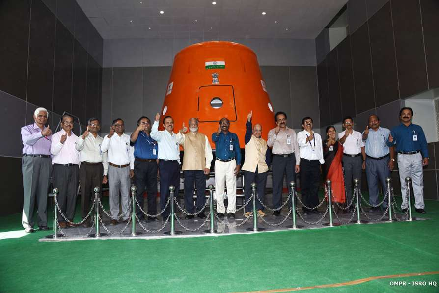
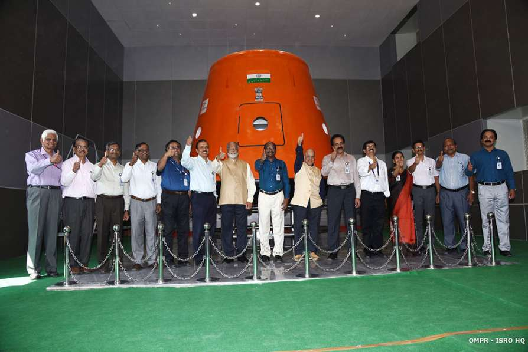

The Indian Space Research Organisation (ISRO) or (IAST : Bhāratīya Antrikṣ Anusandhān Saṅgaṭhan) is the national space agency of India, headquartered in Bengaluru. It operates under the Department of Space (DOS) which is directly overseen by the Prime Minister of India, while Chairman of ISRO acts as executive of DOS as well. ISRO is the primary agency in India to perform tasks related to space based applications, space exploration and development of related technologies.[6] It is one of six government space agencies in the world which possess full launch capabilities, deploy cryogenic engines, launch extra-terrestrial missions and operate large fleets of artificial satellites.
ISRO built India's first satellite, Aryabhata, which was launched by the Soviet Union on 19 April 1975. In 1980, ISRO launched satellite RS-1 onboard its own SLV-3 making India the sixth country to be capable of undertaking orbital launches. SLV-3 was followed by ASLV which was subsequently succeeded by development of many medium-lift launch vehicles, rocket engines, satellite systems and networks enabling agency to launch hundreds of domestic and foreign satellites and various deep space missions for space exploration.
Abbreviation ISRO
Formed - 15 August 1969; 52 years ago
Preceding agency - INCOSPAR
Type - Space agency
Headquarters - Bangalore, Karnataka, India
12°57′56″N 77°41′53″ECoordinates: 12°57′56″N 77°41′53″E
Chairman - Kailasavadivoo Sivan (ex-officio)
Owner - Department of Space, Government of India
Employees - 17,099 as of 2021
Annual budget - Increase ₹13,949 crore (US$1.9 billion) (2021–22)
Website - www.isro.gov.in
 
